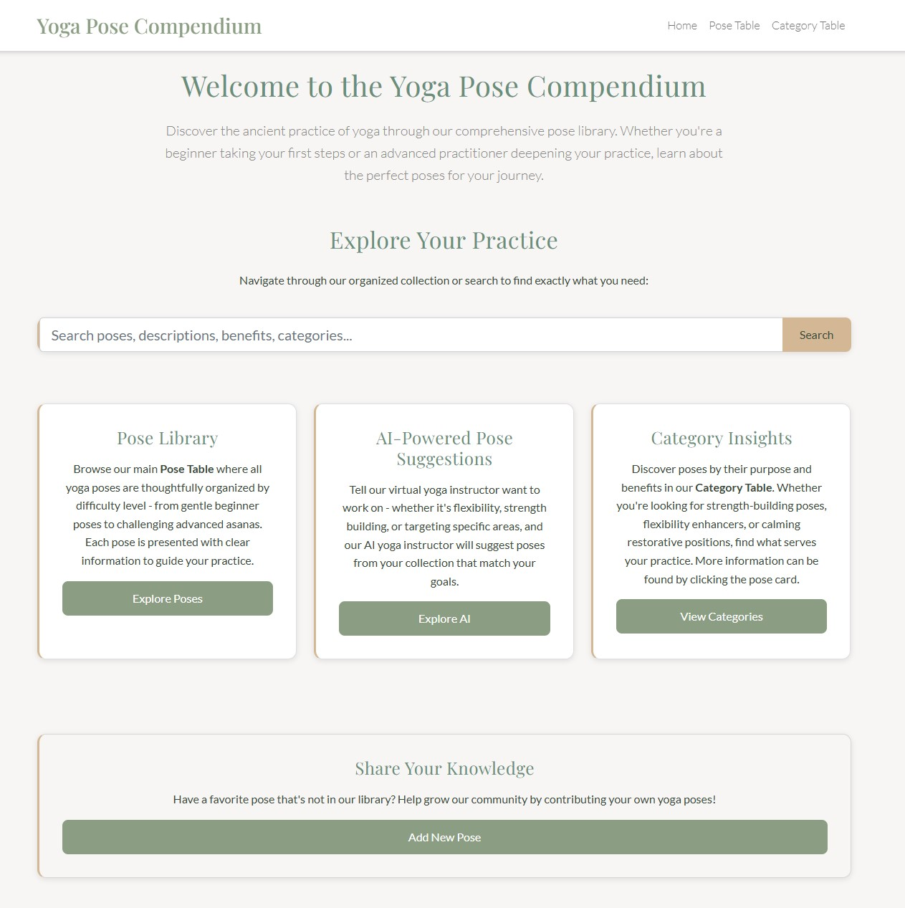

A full-stack web application built with Clean Architecture principles that demonstrates advanced C# and ASP.NET Core development. This MVC application organizes yoga poses by difficulty and category while providing comprehensive CRUD operations, intelligent search functionality, and AI-powered pose recommendations.
The application showcases Clean Architecture implementation with distinct separation between the domain, application, infrastructure, and web layers. This modular design ensures maintainability and allows for easy swapping of components—such as changing database providers—without affecting other layers of the application.
One technical challenge I faced was implementing the many-to-many relationship between poses and categories. I solved this by first querying the junction table for all category IDs associated with each pose, then using SQL's IN operator to retrieve the corresponding category names. I mapped these results to custom data transfer objects (PoseLinkDto) using LINQ for clean data handling throughout the application.
The project includes comprehensive unit tests covering domain logic, use cases, and controllers, utilizing mocking for repositories and services to ensure reliable, testable code.
Technologies: C#, ASP.NET Core MVC, Dapper, SQL Server, OpenAI API, Clean Architecture